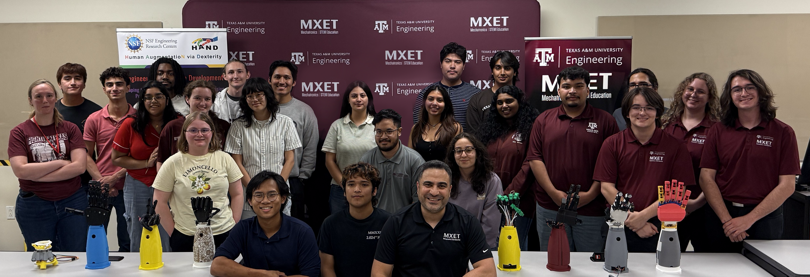

← Projects
HAND ERC: Dexterous Design Challenge
Co-founded an 8-week competition where 20 teams built 11-DoF robotic hands.
Role
Co-Founder
Year
Spring 2026

[Final Submissions for the Inaugural Dexterous Design Challenge in Spring 2026]
Motivation
Dexterous robotics is a rapidly developing field within engineering that spans across both industry and research environments. With this constant growth comes the need for a constant influx of new engineers, however, knowing how to get started is challenging. The HAND ERC Dexterous Design Challenge (DDC) was created to build that pathway. This competition gives students of all majors and skill levels the chance to design, assemble, and test a multi-degree of freedom hand and wrist over an 8-week period with a multidisciplinary team of 4-6 people. Participants are provided a kit with all of the components they need as well as a series of project modules to meet them at their level. This competition is intended to culminate in a multi-day Dexterity Olympiad for teams to show off their work and learn more about the field from industry professionals and graduate school representatives.
My Contributions
As co-founder and coordinator, I drove a large portion of the competition's organization and execution:
• Iterated the provided forearm design and selected easy-to-use components for the provided kit.
• Assisted in the development of project modules for students to understand and use the kit electronics.
• Organized informational sessions, kit distribution, team check-ins, and communications across all of the competition teams.
• Co-coordinated the two-day final championship. Including graduate-student judges, high-school volunteers, evaluation testbeds, and catering.
The competition drew 113 participants on 20 teams from 19 academic majors, with 8 teams completing the final design.

The Competition
The competition, split into two days, consisted of both a technical presentation on each teams design process as well as a demonstration of their submissions abilities using three different dexterity benchmarks:
• Object Pick-and-Place - Timed challenge where teams will use their hand to pick up foam objects of various shapes and sizes.
• ASL Fingerspelling - Teams were provided with a list of words and got points based on the amount of successful finger spellings.
• Simon Says - With the fingers of the teams submission hovering over a custom four-key Simon Says game, teams were scored on the length of their sequence at the end of a timed period.
The top three overall teams were recognized on the podium with the Engineering Excellence Award, alongside additional honors for Best Presentation, Best Design, and Judges' Choice. Texas A&M graduate students served as competition judges, while undergraduate and local high school students volunteered to support the event's execution.
Outcomes
The inaugural Dexterous Design Challenge demonstrated that, when provided with the necessary resources and opportunities, students with no prior experience in dexterous robotics could successfully design and build functional robotic hands while developing the technical knowledge needed to present and defend their design decisions. Building on the success of this first iteration, the HAND ERC has committed support toward expanding the competition to a national scale. Additionally, the competition's structure, implementation, and outcomes served as the foundation for an academic conference paper accepted to the 2026 IEEE International Conference on Engineering, Technology, and Education (ICELIE)